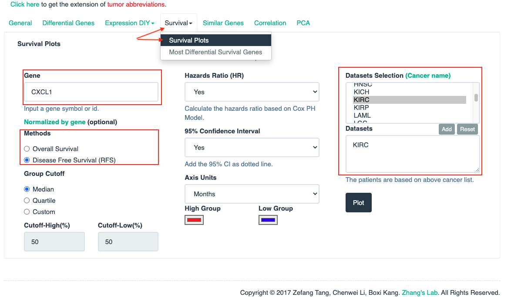

Recover Bioinformatics paper w/o code.
In Brief
-
Publication
-
Keywords
- Sixteen CXC chemokines (not including CXCL15)
- CXCL1, CXCL2, CXCL3, CXCL4, CXCL5, CXCL6, CXCL7, CXCL8, CXCL9, CXCL10, CXCL11, CXCL12, CXCL13, CXCL14, CXCL16, CXCL17
- Renal cell carcinoma(RCC), Kidney cancer
- Sixteen CXC chemokines (not including CXCL15)
-
Methods
ONCOMINEGEPIAUALCANcBioPortalGeneMANIADAVID 6.8MetascapeTRRUSTLinkedOmicsTIMER
Figure 1. mRNA levels of CXC chemokines in RCC (ONCOMINE)
-
Open Oncomine database
-
Set up the parameters for CXCL1
-
Merge all CXC chemokines together with Google Slides
- Red: the numbers of datasets with statistically significant mRNA over-expression (red)
- Blue: downregulated expression of CXC chemokines.
Table 1. The mRNA levels of CXC chemokines in different types of RCC tissues and normal renal tissues at transcriptome level (ONCOMINE)
| TLR | Type | Fold change | P-value | t-test | References |
|---|---|---|---|---|---|
| CXCL3 | Papillary Renal Cell Carcinoma |
−2.244 | 1.000 |
-8.293 |
(26) |
| CXCL6 | Clear Cell Renal Cell Carcinoma | 30.664 | 4.80E-4 | 4.888 | (27) |
| CXCL7 | Clear Cell Renal Cell Carcinoma | −9.410 | 0.991 |
−3.343 | (27) |
| CXCL9 | Clear Cell Renal Cell Carcinoma | 2.997 | 1.41E-6 | 7.311 | (28) |
| Clear Cell Renal Cell Carcinoma | 31.985 | 1.81E-7 | 10.220 | (27) | |
| Clear Cell Renal Cell Carcinoma | 4.648 | 1.26E-5 | 6.703 | (30) | |
| Clear Cell Renal Cell Carcinoma | 7.115 | 2.22E-7 | 7.103 |
(29) | |
| CXCL10 | Clear Cell Renal Cell Carcinoma | 12.873 | 3.10E-12 | 11.075 | (27) |
| Clear Cell Renal Cell Carcinoma | 5.447 | 5.90E-8 | 9.505 | (30) | |
| Hereditary Clear Cell Renal Cell Carcinoma | 11.612 | 9.94E-11 | 9.867 | (29) | |
| Non-Hereditary Clear Cell Renal Cell Carcinoma | 5.897 | 4.41E-7 | 6.000 | (29) | |
| CXCL11 | Hereditary Clear Cell Renal Cell Carcinoma | 2.994 | 9.61E-9 | 7.199 | (29) |
| Clear Cell Renal Cell Carcinoma | 6.303 | 1.26E-4 | 5.000 | (30) | |
| Clear Cell Renal Cell Carcinoma | 20.691 | 8.45E-4 | 5.712 | (27) | |
| CXCL13 | Clear Cell Renal Cell Carcinoma | 9.934 |
0.002 |
3.633 |
(27) |
| Hereditary Clear Cell Renal Cell Carcinoma | 1.921 |
7.84E-4 |
3.447 |
(29) | |
| CXCL16 | Clear Cell Renal Cell Carcinoma | 5.797 | 5.82E-4 | 6.812 | (27) |
| Clear Cell Renal Cell Carcinoma | 2.212 | 7.86E-4 | 3.932 | (28) |
Figure 2. The transcription of CXC chemokines in RCC (UALCAN)
-
Open UALCAN database
-
Click on the button
TCGA analysisand explore the result for CXCL1 gene. -
Click on the button
Expressionand generate the expression result of CXCL1 gene.
-
Merge all CXC chemokines together with Google Slides
- The transcriptional levels of CXCL12(G) were significantly reduced.
Figure 3. The relative level of CXC chemokines in RCC
-
Open GEPIA
-
Click on the button
Multiple Gene AnalysisandMultiple Gene Comparison -
Set up the parameters and click the button
Plot
-
Save and edit plot in cloud
-
Click on
Heatmapto generate the final heatmap
-
The relative expression of CXCL14 was the highest.
Figure 4. Correlation between different expressed CXC chemokines and the pathological stage of RCC patients (GEPIA)
-
Open GEPIA
-
Click on
Expression DIY, chooseStage plot -
Set up the parameters for CXCL1 gene and click the button
Plot -
Generate result of CXCL1 gene.
-
Merge all results of CXC chemokines together with Google Slides.
Figure 5. The prognostic value of different expressed CXC chemokines in RCC patients in the disease free survival curve (GEPIA)
-
Open GEPIA
-
Click
Survivaland chooseSurvival Plots -
Set up the parameters for CXCL1 gene and click the button
Plot -
Generate result of CXCL1 gene
-
Merge all results of CXC chemokines together with Google Slides.
Figure 6. The prognostic value of CXC chemokines in RCC patients in the overall survival curve (GEPIA)
-
Open GEPIA
-
Click
Survivaland chooseSurvival Plots -
Set up the parameters for CXCL1 gene and click the button
Plot -
Generate result of CXCL1 gene
-
Merge all results of CXC chemokines together with Google Slides.